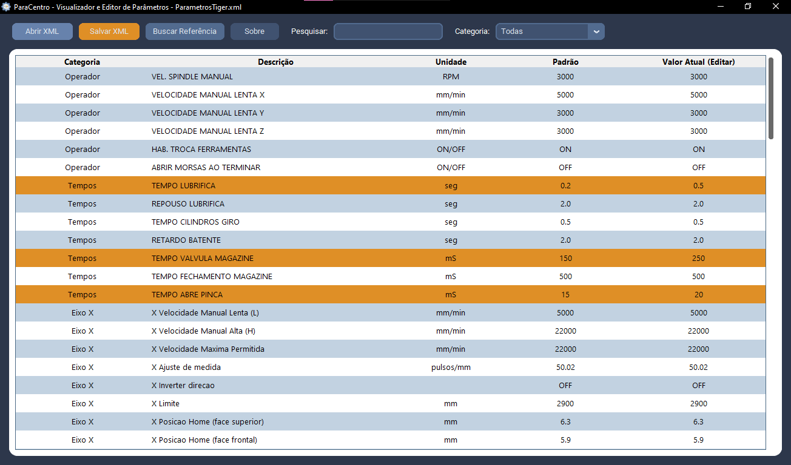

Sobre
Às vezes precisamos comparar os parâmetros das máquinas para ver se ninguém mudou nada. Como são exportados em XML e é um pouco complicado de ler e achar o que queremos, pedi para uma IA criar esse software. Eu não escrevi nada e quase nem li. Só testei e pedi para fazer melhorias.

Esse foi meu primeiro projeto com vibe coding. Depois de 7 iterações o Gemini me entregou algo usável e prático que faz o que eu quero: mostra os parâmetros, permite editar e faz uma comparação entre dois arquivos, destacando as diferenças.